orb-merge-e9e132-20261122-1037 · playable /home/user/simula-playable-simula-agent/games/generated/orb-merge.html · 2026-11-22 10:48 UTC| cut | video | score | gate | H | J | judge |
|---|---|---|---|---|---|---|
| a hook-first |
88.8 | ✓ | 90.5 dead air 21% · action 0.472 · hook 1.278 moments 0.947 · arc 1 · 8 shots ✓ core loop · ✓ feature · ✓ progression · ✓ end card |
87.4 loop 9 · features 9 human 8 · action 9 hook 9 · polish 8 · run 9 |
This 19-second highlight opens with a high-energy 64-orb combo hook before showcasing the core merging loop, Bomb power-up, and a clean 'PLAY NOW' end card. Aside from a slightly jarring score reset after the opening hook, the pacing, clarity, and human-like aiming make it a strong ad creative. worst @2s: Abrupt cut from the 64-orb hook (score 419) back to an earlier board state (score 44), which is slightly jarring. | |
| b ★ learn-then-escalate |
87.2 | ✓ | 88.4 dead air 9% · action 0.464 · hook 0.625 moments 0.963 · arc 1 · 7 shots ✓ core loop · ✓ feature · ✓ progression · ✓ end card |
86.2 loop 9 · features 9 human 8 · action 8.5 hook 7.5 · polish 9 · run 9 |
This is a crisp, well-paced highlight that clearly demonstrates the core 2048-style drop-and-merge loop, combo chains, and Bomb power-up. It feels like natural human play and finishes cleanly on a strong call-to-action end card. worst @9s: Brief lull in action as a couple of orbs are dropped without immediate merges. | |
| c feature-montage |
85 | ✓ | 86.7 dead air 14% · action 0.452 · hook 0.642 moments 0.946 · arc 1 · 8 shots ✓ core loop · ✓ feature · ✓ progression · ✓ end card |
83.6 loop 9 · features 9 human 8 · action 8 hook 7 · polish 8.5 · run 8.5 |
A crisp, well-paced 19-second highlight that clearly demonstrates the 2048-style orb merging loop, combo chains, Bomb power-up, and Speed Up mode. Despite starting with tutorial prompts and having a brief UI text overlap at 7 seconds, it looks like natural human play and finishes with a strong climax and end card. worst @7s: The 'Tap the BOMB, then drop it!' prompt overlaps with the 'BIG MERGE!' banner, creating brief visual clutter. | |
| base_first baseline: first 20 s |
69.5 | ✓ | 62.1 dead air 33% · action 0.405 · hook 0.63 moments 0.728 · arc 0.7 · 3 shots ✓ core loop · ✓ feature · ✗ progression · ✗ end card |
75.6 loop 9 · features 7 human 8 · action 7 hook 6 · polish 7.5 · run 7.5 |
This highlight clearly demonstrates the 2048-style orb merging core loop, combo chains, and unlocking the Bomb power-up with natural-feeling player pacing. Trimming the slow tutorial opening and extending slightly to show the Bomb actually being used would make it an even stronger ad. worst @0s: Starts with a 3-second static tutorial prompt ('Drag to aim, release to drop!') before any orb is actually dropped. | |
| base_random baseline: random clips |
59.9 | ✓ | 60.7 dead air 37% · action 0.381 · hook 0.685 moments 0.718 · arc 0.606 · 5 shots ✓ core loop · ✗ feature · ✓ progression · ✗ end card |
59.3 loop 8.5 · features 6.5 human 6.5 · action 6 hook 4 · polish 4 · run 4.5 |
The highlight clearly demonstrates the 2048 orb-merging loop and features a great 64-orb combo chain, but the first three seconds are wasted on a static tutorial screen. The editing order is jarring—jumping backwards in score, showing a Time's Up screen mid-clip, and ending abruptly without an end card. worst @15s: TIME'S UP! appears mid-video and then abruptly cuts back to earlier gameplay at score 194 with no end card. |
The player understood the core 2048 orb-drop loop and reached a 64-orb, but experienced a slow 5.4s start and repeated mid-game uncertainty. The biggest friction was an almost-invisible countdown timer that caused an abrupt 'TIME'S UP!' fail screen at 51.0s.
| time | type | severity | issue | suggested fix | evidence | signals |
|---|---|---|---|---|---|---|
| 0:51.0 | ui | high | Subtle timer leads to abrupt TIME'S UP! fail screen The countdown timer is only a thin, unlabeled vertical line along the left wall of the container, so the 'TIME'S UP! Best orb: 64' overlay at 51.0s catches the player off guard (38% clarity on level_end). | Replace or supplement the left-wall bar with a clear numeric countdown badge (e.g., '0:50') in the top HUD that pulses red in the final 10 seconds. | 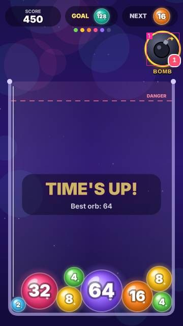 | S13, S15 |
| 0:00.0–0:05.4 | pacing | medium | Slow 3.5s idle start and 5.4s to first merge The session had 3.5s of no motion or input at the start and took 5.4s to achieve the first visible merge, despite the static 'Drag to aim, release to drop!' prompt and 'Match equal orbs to merge!' banner. | Add an animated dragging hand indicator over the starting 2-orb and a pulsing highlight ring around the matching target orb at the bottom on frame 0. | 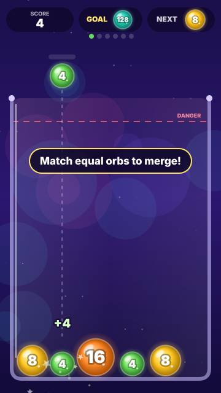 | S1, S14 |
| 0:10.9–0:49.0 | confusion | medium | Mid-game aiming uncertainty and prominent 0-count Bomb UI Eleven unclear_screen signals (38%-48% clarity) fired during gameplay; the board lacks a landing-orb ghost preview, and the 'BOMB' button stays large and bright in the top-right even when its counter is '0'. | Dim the 'BOMB' button when its count is 0, and add a subtle pulsing glow to any board orb that matches the currently held orb. | 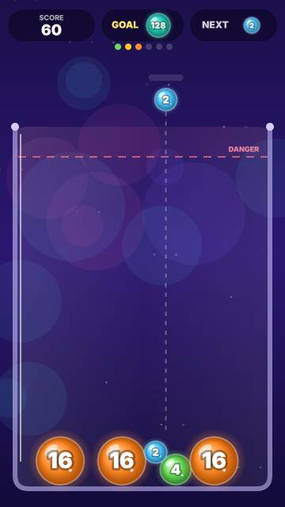 | S2, S3, S4, S5, S6, S7, S8, S9, S10, S11, S12 |
| time | saw | phase | planner | actions (with human reaction time) | notes | cost |
|---|---|---|---|---|---|---|
| 0:02.0 turn 1 | 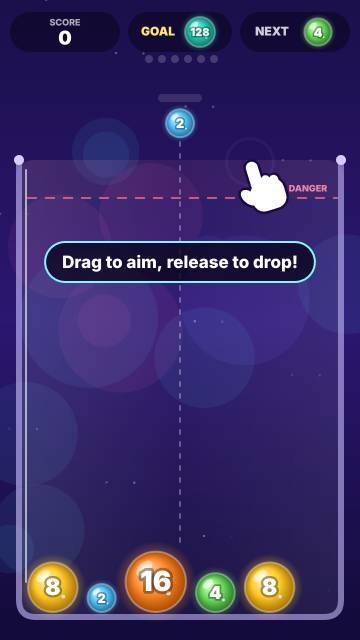 |
tutorial decider: tutorial 97% clarity 98% |
sees: Tutorial screen: 'Drag to aim, release to drop!' with a 2-ball ready to drop progress: First turn |
0:03.6 drag Aim and drop the 2-ball onto the 2-ball at x=280 (+1643 ms) | 2048 ball drop game. Goal: 128 ball. Drag to aim, release to drop. Bottom has: 8(x145), 2(x280), 16(x435), 4(x600), 8(x760). Current ball: 2, next: 4. | 3.6s $0.0062 |
| 0:05.4 turn 2 | gameplay decider: tutorial 79% clarity 88% last input worked: 93% |
sees: 2048 orb drop game, 4-orb ready at x280 above another 4-orb, next is 8 progress: 2-orb merged into 4-orb at x280, score 4 |
0:05.8 drag Drop 4-orb onto the 4-orb at x280 (+433 ms) | 2048 ball drop game. Goal: 128 ball. Drag/tap to drop. Bottom: 8(x145), 4(x280), 16(x435), 4(x600), 8(x760). Current: 4, next: 8. | 4.8s $0.0074 | |
| 0:07.3 turn 3 | 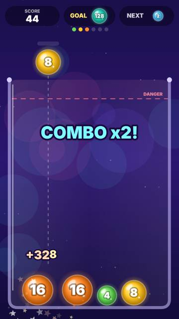 |
gameplay decider: gameplay 83% clarity 75% last input worked: 76% |
sees: 2048 ball drop gameplay, score 44, COMBO x2!, current orb 8, next 2 progress: Last drop triggered combo x2, created 16s at bottom |
0:07.9 drag Drop 8-orb onto the 8-orb at x750 (+593 ms) | 2048 ball drop game. Goal: 128 ball. Bottom: 16(x205), 16(x435), 4(x595), 8(x750). Current: 8, next: 2. | 15.2s $0.0063 |
| 0:09.3 turn 4 | 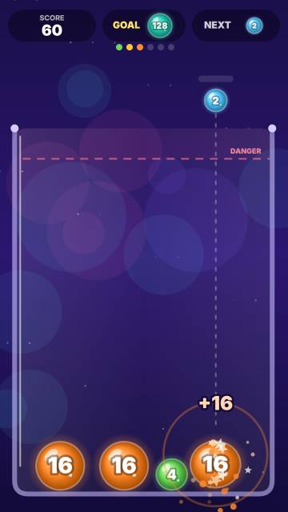 |
gameplay decider: gameplay 98% clarity 55% last input worked: 93% |
sees: Gameplay: 2048 ball drop, 16-16-4-16 at bottom, 2-orb ready progress: Merged 8+8 into 16 at x750 |
0:09.5 drag Drop 2-orb onto the 4-orb at x595 (+267 ms) | 2048 ball drop game. Goal: 128 ball. Bottom: 16(x205), 16(x435), 4(x595), 16(x750). Current: 2, next: 2. | 4.7s $0.0069 |
| 0:10.9 turn 5 | gameplay decider: gameplay 95% clarity 38% last input worked: 83% |
sees: 2048 ball drop gameplay, score 60, current 2-ball, next 2-ball progress: 2-ball dropped near the 4-ball at bottom |
0:11.5 drag Drop 2-ball onto the 2-ball at x545 to merge into 4 and chain with 4 (+656 ms) | 2048 ball drop game. Goal: 128 ball. Bottom: 16(x205), 16(x435), 2(x545), 4(x615), 16(x750). Current: 2, next: 2. | 3.3s $0.0066 | |
| 0:13.1 turn 6 | 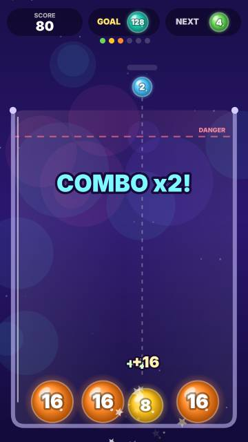 |
gameplay decider: gameplay 94% clarity 51% last input worked: 97% |
sees: 2048 ball drop gameplay, COMBO x2! text, 16, 16, 8, 16 at bottom progress: Merged 2->4->8 for combo x2, score 80 |
0:13.3 tap Drop 2-ball onto the 8-ball at x=580 (+220 ms) | 2048 ball drop. Goal: 128. Bottom: 16(x200), 16(x400), 8(x580), 16(x780). Current: 2, next: 4. | 3.1s $0.0062 |
| 0:14.5 turn 7 | 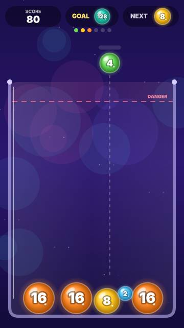 |
gameplay decider: gameplay 98% clarity 48% last input worked: 89% |
sees: 2048 ball drop gameplay, score 80, current ball 4, next ball 8 progress: 2-ball landed at x=680 between 8 and 16 |
0:14.9 tap Drop 4-ball onto 2-ball at x=680 (+401 ms) | 2048 ball drop. Goal: 128. Bottom: 16(x200), 16(x400), 8(x580), 2(x680), 16(x780). Current: 4, next: 8. Drop 4 at x=680, then drop 8 on 8(x580) next turn. | 3.7s $0.0075 |
| 0:16.3 turn 8 | 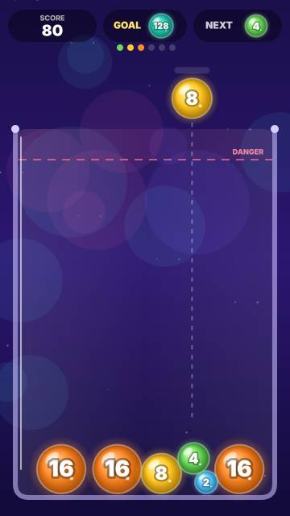 |
gameplay decider: gameplay 98% clarity 43% last input worked: 96% |
sees: 2048 ball drop gameplay, score 80, 8-ball ready, next 4 progress: 4-ball dropped onto 2-ball as planned. |
0:16.7 tap Drop 8-ball onto the 8-ball at x=545 (+473 ms) | 2048 ball drop. Goal: 128. Bottom: 16(x200), 16(x400), 8(x545), 4(x665) on 2(x705), 16(x825). Current: 8, next: 4. Drop 8 on 8(x545) to merge into 16 (and maybe chain with 16 at x400). | 3.2s $0.0064 |
| 0:18.0 turn 9 | 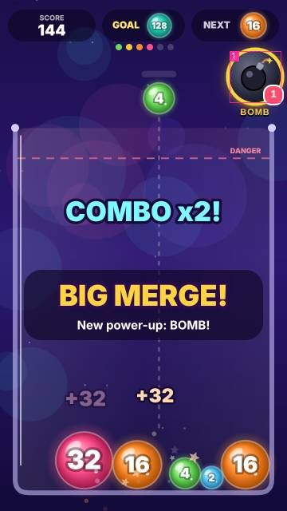 |
gameplay decider: gameplay 52% clarity 61% last input worked: 97% |
sees: 2048 ball drop gameplay, COMBO x2! BIG MERGE! New power-up: BOMB! Bottom: 32, 16, 4, 2, 16. Current: 4, next: 16. progress: 8 merged into 16 and chained into 32! Unlocked Bomb power-up. |
0:18.4 tap Drop 4-ball onto the 4-ball at x=640 (+347 ms) | 2048 ball drop. Goal: 128. Score: 144. Bottom: 32(x290), 16(x480), 4(x640), 2(x740), 16(x855). Current: 4, next: 16. Drop 4 on 4(x640). | 3.4s $0.0068 |
| 0:19.7 turn 10 | 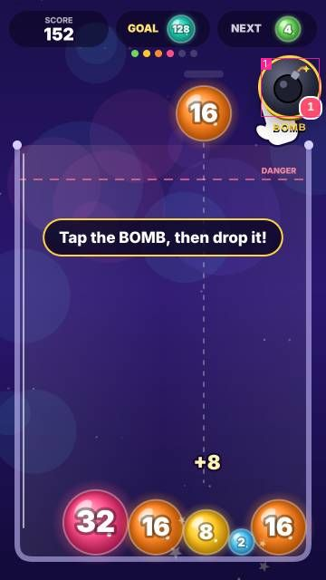 |
tutorial decider: tutorial 81% clarity 94% last input worked: 87% |
sees: Tutorial prompt: Tap the BOMB, then drop it! Score 152. progress: 4+4 merged into 8. Bomb tutorial appeared. |
0:20.3 tap “Bomb power-up, 1 left: tap to load a bom” Tap the Bomb power-up button to load it (+519 ms) 0:20.6 tap Drop the bomb onto the 2-ball (+204 ms) |
2048 ball drop. Goal: 128. Score: 152. Bomb power-up tutorial appeared. Tap bomb (target 1) then drop it. | 3.0s $0.0061 |
| 0:22.2 turn 11 | 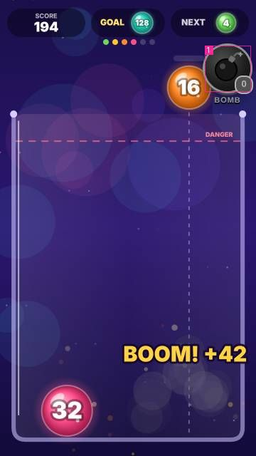 |
gameplay decider: gameplay 81% clarity 58% last input worked: 100% |
sees: 2048 ball drop gameplay, 32-ball on board, 16-ball ready to drop progress: Bomb exploded (+42), score 194 |
0:22.7 tap Drop 16-ball onto/near the 32-ball at x=260 (+501 ms) | 2048 ball drop. Goal: 128. Score: 194. Board cleared except 32-ball at x=260. Drop 16-ball near 32-ball. | 3.0s $0.0058 |
| 0:24.1 turn 12 | 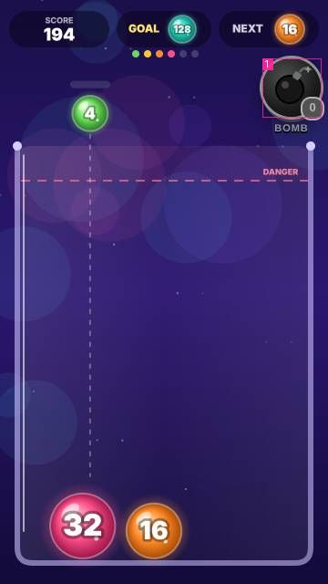 |
gameplay decider: gameplay 98% clarity 64% last input worked: 97% |
sees: Gameplay: 32-ball at x=250, 16-ball at x=470. Current ball is 4, next is 16. progress: 16-ball dropped next to 32-ball. |
0:24.6 tap Drop 4-ball to the right out of the way (+507 ms) | 2048 ball drop. Goal: 128. Score: 194. 32-ball at x=250, 16-ball at x=470. Drop 4-ball out of the way (x=650), then drop next 16-ball onto x=470 to merge into 32 -> 64. | 3.3s $0.0065 |
| 0:25.7 turn 13 | 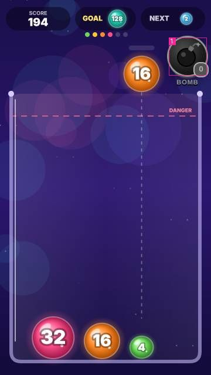 |
gameplay decider: gameplay 98% clarity 38% last input worked: 94% |
sees: 16-ball ready to drop, 32-ball at x=250, 16-ball at x=478, 4-ball at x=670 progress: 4-ball dropped out of the way, 16-ball is now ready |
0:26.0 tap Drop 16-ball onto the 16-ball at x=478 (+334 ms) | 2048 ball drop. Goal: 128. Score: 194. Dropping 16-ball onto 16-ball at x=470 to merge into 32, hopefully chaining into 64 with the 32-ball at x=250. | 14.8s $0.0062 |
| 0:27.7 turn 14 | 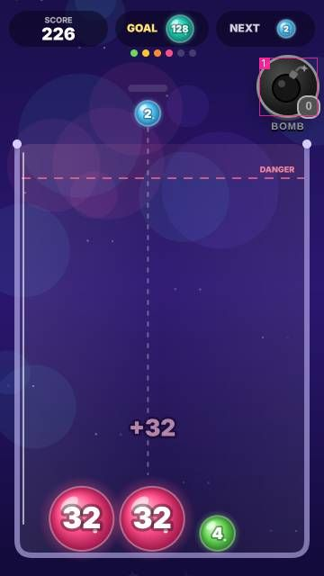 |
gameplay decider: gameplay 98% clarity 46% last input worked: 98% |
sees: 2048 ball drop gameplay, score 226, two 32-balls and a 4-ball at bottom, 2-ball ready progress: 16-balls merged into 32-ball! Two 32-balls are now side by side. |
0:28.5 tap Drop 2-ball near the 4-ball on the right (+774 ms) | 2048 ball drop. Goal: 128. Score: 226. Two 32-balls at bottom, plus a 4-ball at x=670. Dropping 2-balls to the right near the 4-ball to build up without blocking the 32-balls. | 3.9s $0.0070 |
| 0:29.6 turn 15 | 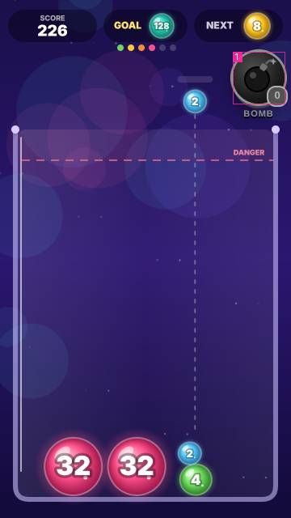 |
gameplay decider: gameplay 99% clarity 52% last input worked: 97% |
sees: 2048 ball drop, 2-ball ready to drop, 2-ball on 4-ball at x=670, NEXT is 8-ball progress: 2-ball landed on 4-ball at x=670 |
0:30.0 tap Drop 2-ball onto the 2-ball at x=670 to chain merge into 8 (+364 ms) | 2048 ball drop. Goal: 128. Score: 226. Two 32-balls at bottom, 2-ball on 4-ball at x=670. Dropping 2-ball at x=670 to chain merge 2+2->4, 4+4->8, then will drop NEXT 8-ball. | 3.0s $0.0063 |
| 0:31.6 turn 16 | 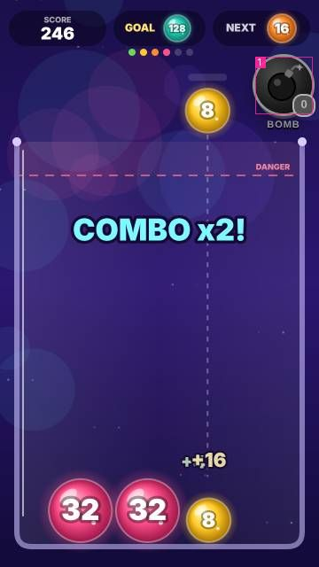 |
gameplay decider: gameplay 96% clarity 50% last input worked: 98% |
sees: 2048 ball drop gameplay, COMBO x2! progress: Chain merge succeeded into 8-ball at x=650; holding 8-ball, NEXT is 16-ball |
0:32.0 tap Drop 8-ball onto the 8-ball at x=650 to merge into 16 (+401 ms) | 2048 ball drop. Goal: 128. Score: 246. Two 32-balls at bottom left/mid, 8-ball at x=650. Dropping 8-ball onto 8-ball to make 16-ball, then will drop NEXT 16-ball. | 2.7s $0.0060 |
| 0:33.4 turn 17 | 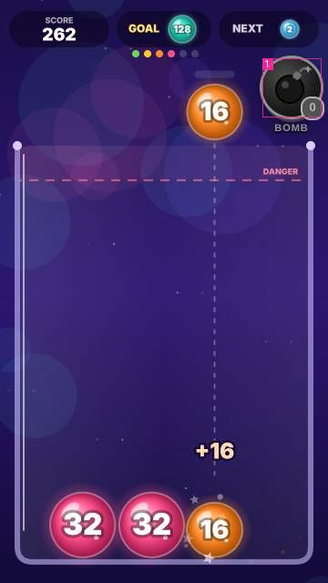 |
gameplay decider: gameplay 98% clarity 42% last input worked: 98% |
sees: 2048 ball drop gameplay, 16-ball lined up above 16-ball at x=650 progress: 8-balls merged into 16-ball |
0:33.6 tap Drop 16-ball onto 16-ball at x=650 to chain merge into 64 (+224 ms) | 2048 ball drop. Goal: 128. Score: 262. Two 32-balls and a 16-ball at bottom. Dropping 16-ball onto 16-ball at x=650 to chain merge into 32 and 64. | 2.8s $0.0058 |
| 0:35.6 turn 18 | 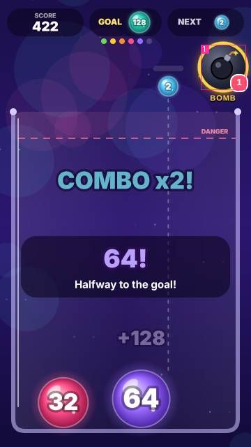 |
gameplay decider: gameplay 80% clarity 63% last input worked: 96% |
sees: 2048 ball drop, COMBO x2! 64! Halfway to the goal! 32-ball on left, 64-ball on right, 2-ball ready progress: Chain merge worked, got 64-ball, score 422 |
0:36.1 tap Drop 2-ball onto the 32-ball on the left (+542 ms) 0:36.2 wait Wait for next 2-ball 0:37.3 tap Drop second 2-ball onto the first 2-ball to merge into 4 (+287 ms) |
2048 ball drop. Goal: 128. Score: 422. Have 32-ball (x=250) and 64-ball (x=560). Building another 32-ball on top of the 32-ball to reach 128. | 4.0s $0.0073 |
| 0:38.7 turn 19 | 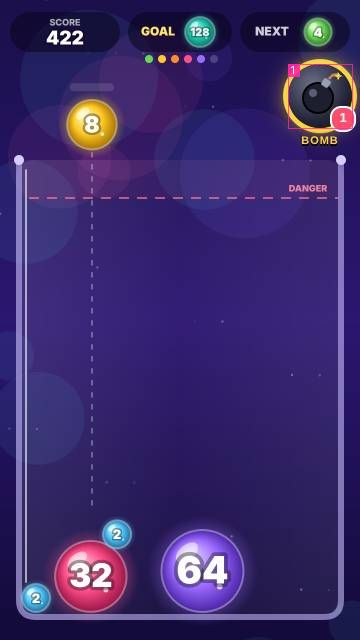 |
gameplay decider: gameplay 96% clarity 43% last input worked: 72% |
sees: 2048 ball drop gameplay, 8-ball ready, 4-ball next progress: Last 2-ball landed on top-right of 32-ball |
0:39.3 tap Drop 8-ball on the right side (+665 ms) | 2048 ball drop. Goal: 128. Score: 422. Have 32-ball (x=250) and 64-ball (x=560), plus two 2-balls. Dropping 8-ball on right side to keep left clear for 2s and 4s. | 3.5s $0.0068 |
| 0:40.7 turn 20 | 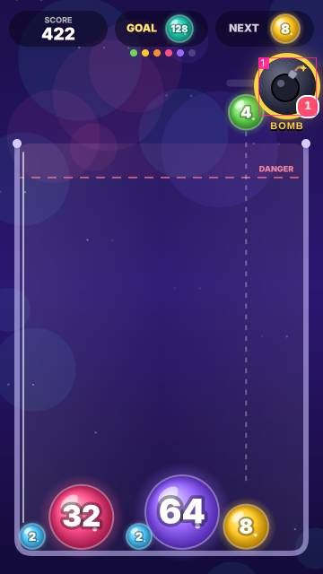 |
gameplay decider: gameplay 98% clarity 45% last input worked: 94% |
sees: Gameplay: 2, 32, 2, 64, 8 on board; 4 ready, 8 next progress: 8-ball landed on the right at x=760. |
0:41.1 tap Drop 4-ball on the far right (+440 ms) 0:41.2 wait Wait for 8-ball to load 0:42.6 tap Drop 8-ball onto the 8-ball to merge into 16 (+299 ms) |
2048 ball drop. Goal: 128. Score: 422. Dropping 4-ball on far right (x=880) then 8-ball onto the 8-ball (x=760) to merge into 16. | 3.8s $0.0077 |
| 0:43.9 turn 21 | 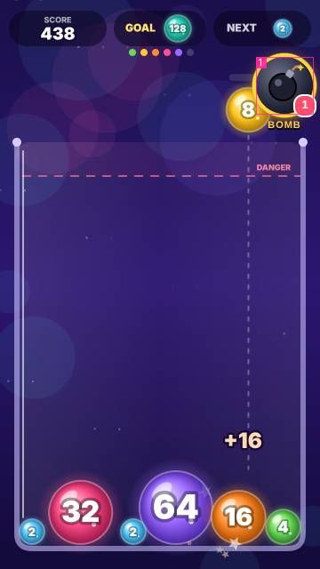 |
gameplay decider: gameplay 99% clarity 48% last input worked: 99% |
sees: Gameplay: 8-ball ready, NEXT is 2-ball. Board has 2, 32, 2, 64, 16, 4. progress: 8-ball merged into 16! Score 438. |
0:44.4 tap Drop 8-ball onto the 16-ball on the right (+486 ms) 0:44.5 wait Wait for 2-ball to load 0:45.5 tap Drop 2-ball onto the 2-ball at x=415 to merge into 4 (+200 ms) |
2048 ball drop. Goal: 128. Score: 438. Need to build up 16 on the right to merge with 16->32, or 32->64->128. Dropping 8-ball on right (x=750) and 2-ball onto 2-ball (x=415). | 3.9s $0.0077 |
| 0:46.9 turn 22 | 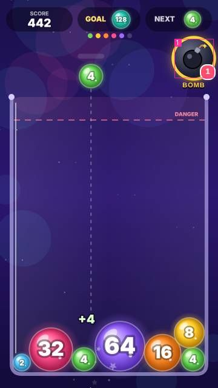 |
gameplay decider: gameplay 98% clarity 39% last input worked: 96% |
sees: 2048 ball drop gameplay, 4-ball ready, next is 4-ball progress: 2-ball merged into 4-ball at x=385, score 442 |
0:47.7 tap Drop 4-ball onto the 4-ball at x=385 to merge into 8 (+823 ms) | 2048 ball drop. Goal: 128. Score: 442. Board has 32, 4, 64, 16, 8. Dropping 4-ball onto 4-ball at x=385 to make 8. | 3.0s $0.0065 |
| 0:49.0 turn 23 | 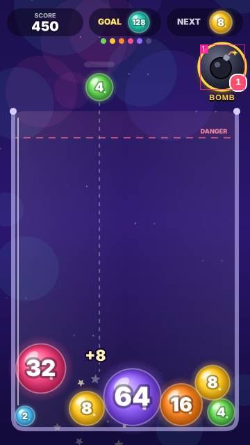 |
gameplay decider: gameplay 98% clarity 48% last input worked: 99% |
sees: Gameplay, score 450, 4-ball ready to drop, next is 8-ball progress: 4-ball merged into 8-ball |
0:49.7 tap Drop 4-ball between 32 and 8 (+641 ms) | 2048 ball drop. Goal: 128. Score: 450. Board has 32, 8, 64, 16, 8, 4. Dropping 4-ball at x=250 to keep 8-balls clear for next 8-ball. | 5.1s $0.0088 |
| 0:51.0 turn 24 | level_end decider: fail 61% clarity 38% last input worked: 92% |
sees: TIME'S UP! Best orb: 64 overlay progress: Time ran out at 51s, showing TIME'S UP! |
0:51.0 wait Wait for end card or next screen | 2048 ball drop. Time's up! Best orb: 64, Score: 450. Waiting for end card. | 2.3s $0.0050 | |
| 0:54.0 turn 25 | 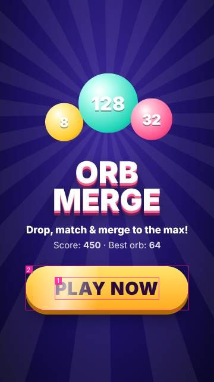 |
end_card decider: end_card 44% clarity 95% last input worked: 98% |
sees: End card for ORB MERGE with Score 450, Best orb 64, and PLAY NOW button progress: End card appeared |
0:57.3 tap “Play now” Tap PLAY NOW button on end card (+815 ms) | 2048 ball drop (Orb Merge). Score: 450, Best orb: 64. Tapping PLAY NOW on end card. | 2.2s $0.0052 |
Files: raw.mp4 · highlight.mp4 · candidates/ · moments.json · game_model.json · edl_*.json · eval.json · friction.json/.md · plans.jsonl · actions.jsonl · observations.jsonl · decisions in plans.jsonl · ledger.jsonl · trace.jsonl · obs/